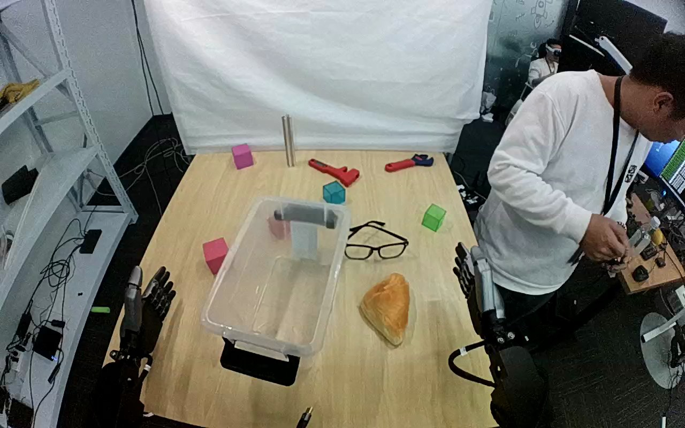

ActionNet · 01JMCB8Z194OS4IEC5
01jmcb8z194os4iec5

Visual review action_review.json
{
"dataset": "ActionNet",
"episode_id": "01JMCB8Z194OS4IEC5",
"prompt_protocol": "humanoid_action_v1",
"prompt_provenance": "visually_authored_from_video_and_initial_frame",
"review_scope": "One dedicated agent reviewed the complete unchanged 445-frame top/rgb.mp4 and the generation first frame. Full single-task sequence retained.",
"source_video": "../../original/top/rgb.mp4",
"conditioning_first_frame": "../first_frame.png",
"generation_video": "../../original/top/rgb.mp4",
"action_prompt": "../actiongeneration_prompt.txt",
"source_frame_start": 0,
"source_frame_end_exclusive": 445,
"fps_rational": "30/1",
"resolution": [
1280,
800
],
"source_annotation": {
"verbatim_task_prompt": "Move the clock and place it into the transparent container.",
"task_prompt_path": "../../original/task_prompt.txt"
},
"anatomical_side_evidence": {
"active_arm": "hand entering from the lower-right edge of the initial image",
"initial_frame_evidence": "Two dark dexterous robot hands rest on the near table edge, one at lower-left and one at lower-right of the image. The lower-right hand/forearm performs the whole task; the lower-left hand stays motionless from frame 0 to 444. Torso and shoulders are outside the image, so the camera pose relative to the robot body (and any mirroring) is not independently established.",
"confidence": "Visible-arm identity is unambiguous; anatomical left/right is not independently established."
},
"arm_roles": {
"lower_right_visible_arm": "Sole manipulating hand: opens and approaches the pastry, closes thumb and fingers on opposing sides of it, bears it during lift and transport over the eyeglasses and across the container rim, lowers it into the container, opens to release and withdraws to the right.",
"lower_left_visible_arm": "Remains stationary beside the table at image left; no contact with the pastry, container, or any other object."
},
"coordination": "Single-hand object placement. No hand-to-hand transfer or bimanual stabilization. A person standing at image right (operating a wooden control board) and a second person in the far background do not touch the robot, pastry, or container.",
"chronology": [
{
"frames": [
0,
44
],
"observation": "Golden pastry rests on the tabletop right of the transparent plastic container and below the eyeglasses; both robot hands are idle and clear. The standing person at right works at a control board."
},
{
"frames": [
46,
72
],
"observation": "The lower-right hand rises into view and swings in toward the pastry with the thumb and finger group still open; it reaches the right side of the pastry around frame 54."
},
{
"frames": [
74,
118
],
"observation": "Hand positioned beside and over the pastry: the lower grey finger/palm segment slides under and the upper fingers sit above its right side (frame 74 shows pastry still on the table with a gap). Fine positioning adjustments follow, no lift yet."
},
{
"frames": [
120,
166
],
"observation": "Fingers close around opposing sides of the pastry (frame 120 shows pincer contact, frame 168 shows it enclosed and starting to rise). No regrasp or second-hand help."
},
{
"frames": [
168,
238
],
"observation": "The hand raises the pastry off the table and carries it to the left over the eyeglasses (frames 168-214 near the glasses; frames 216-238 the pastry is above the container's right wall)."
},
{
"frames": [
240,
334
],
"observation": "Pastry carried across the container rim and lowered into the container; frame 264-290 it hangs inside the container held by the hand, frames 300-334 it sits near the floor, still gripped, with the pastry settling in a slightly tilted position."
},
{
"frames": [
336,
358
],
"observation": "The hand opens and releases the pastry onto the container floor; at frame 350 the pastry rests on the container bottom with fingers spread above it."
},
{
"frames": [
360,
408
],
"observation": "The hand rises out of the container and withdraws to the right, passing above the eyeglasses and green block (frames 384-408), with the pastry staying in place."
},
{
"frames": [
410,
444
],
"observation": "Hand returns near its starting pose at the lower-right edge; pastry rests inside the container through the final frame 444. The standing person looks toward the camera at the end without touching anything."
}
],
"observed_outcome": {
"status": "successful_visible_placement",
"description": "Golden pastry is released onto the bottom of the transparent plastic container and remains resting there while the hand withdraws to the lower-right edge.",
"selected_action_outcome": "successful_visible_placement",
"source_overall_success_label": "not used to infer outcome"
},
"source_annotation_discrepancies": [
"The source prompt says 'clock'; no clock is visible. The manipulated object is a golden croissant/bread-like pastry.",
"The target container is a transparent plastic storage box, consistent with the source wording."
],
"uncertainties": [
"Whether the pastry is real food or a prop cannot be established visually.",
"Torso and shoulder attachment are outside the image and camera pose or mirroring is not independently established, so anatomical left/right is uncertain; the prompt uses the hand entering from the lower-right edge.",
"Exact frames of table separation and container-floor contact are bracketed by the stated intervals from every-second-frame sampling and hand occlusion.",
"Slight handheld-like camera shake and exposure changes occur in the source view; the fixed-camera constraint is retained verbatim."
],
"inspection_coverage": {
"total_decoded_frames": 445,
"overview_frame_indices": {
"start": 0,
"stop_inclusive": 444,
"step": 2,
"count": 223
},
"overview_method": "Decoded RGB every second frame into nineteen temporary 4-by-3 contact sheets (480 px wide tiles) outside dataset folders; reviewed all sheets.",
"native_resolution_frames": [
0,
74,
120,
168,
216,
300,
350,
380
],
"native_resolution": [
1280,
800
],
"initial_png_inspected_after_full_sequence": true,
"temporary_evidence_location": "/tmp/an_review_01JMCB8Z194OS4IEC5 (not under generation input; removed after review)",
"retained_evidence_frame_directories": false
},
"preservation": {
"whole_original_single_task_clip_retained": true,
"crop": false,
"shorten": false,
"resize": false,
"reencode": false,
"source_and_generation_sha256_equal": true
},
"prompt_word_count": 83
}